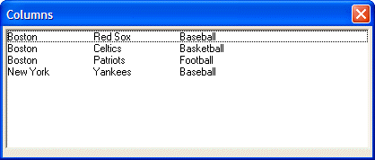

Displaying Data in Columns
In lesson 8 we saw how a tabbed list box could be used to display data in columns. The following example shows another approach. This approach may be slightly more verbose, but it gives you extremely fine control over how the data is lined up, and ultimately, it is probably easier to understand.
Consider the following script:
tab1 = "{T=1}" tab2 = "{T=2}" data = "Boston"+tab1+"Red Sox"+tab2+"Baseball" + crlf()+\ "Boston"+tab1+"Celtics"+tab2+"Basketball" + crlf()+\ "Boston"+tab1+"Patriots"+tab2+"Football" + crlf()+\ "New York"+tab1+"Yankees"+tab2+"Baseball" + crlf() ui_dlg_box("Columns",<<%dlg% [%O={@@}%.80,10data_selected^#data]; %dlg%) |
This script produces this dialog:

Lesson 15: Displaying Data in Columns
Let's analyze how this script works.
The first key thing to notice is the owner-draw specification for the list box. The specification is " O={@@} ". This indicates that the owner draw specifications are embedded in the actual data to be displayed.
The variables, tab1 and tab2 define the tab stops in the list. The first tab stop is at 1 inch and the second tab stop is at 2 inches.
The first row of data displayed in the list box is:
Boston{T=1}Red Sox{T=2}Baseball |
"Boston" is displayed in the first column, and then Alpha Five advances to the tab stop at 1 inch and displays "Red Sox". The Alpha Five advances to the second tab stop at 2 inches, and displays "Baseball".
Note the use of the \ character in the expression for "data". The \ character indicates that the expression continues onto the next line. It helps make your Xbasic scripts more readable when you have long expressions.
In this example, the embedded owner-draw specification is quite simple. It is just the {T=tab position} command. However, Alpha Five supports several embedded owner-draw specifications, some of which we will explore in the next examples.
Next
Supported By
Alpha Five Version 5 and Above
Limitations
Desktop applications only.